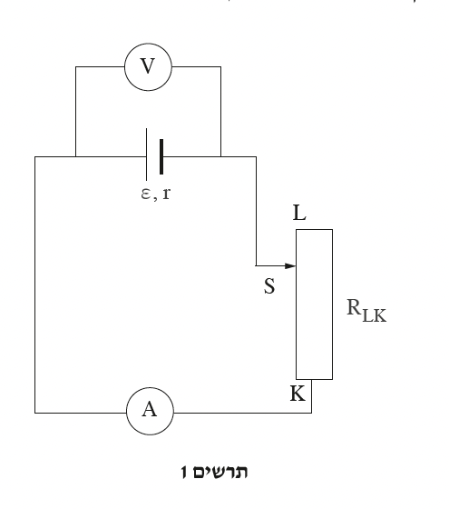
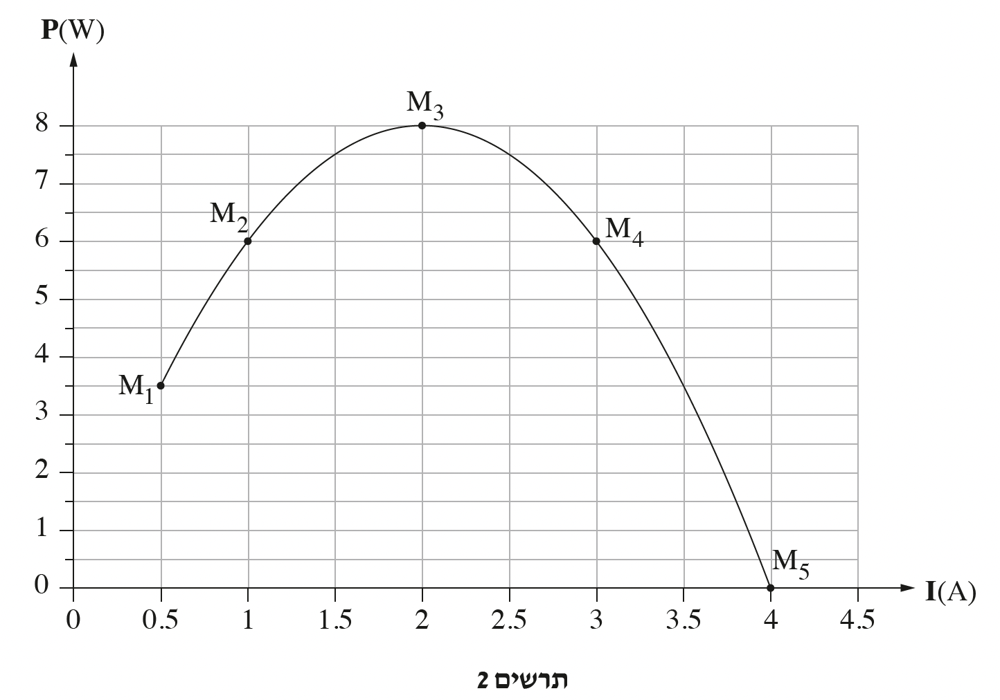
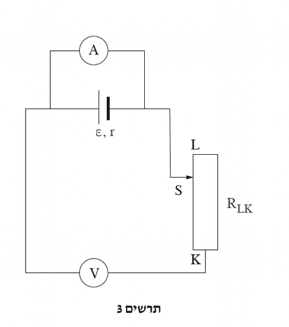

שאלה 4

תלמידים הרכיבו את המעגל החשמלי המתואר בתרשים 1 מן הרכיבים האלה: סוללה שהכא"מ שלה ε והתנגדותה הפנימית r, נגד משתנה שהתנגדותו RLK ונקודת המגע הנייד שלו S, תילים שהתנגדותם זניחה ומכשירי מדידה אידיאליים - מד-מתח V ומד-זרם A.
התלמידים הזיזו את המגע הנייד S של הנגד המשתנה RLK לכיוון הקצה L.
קבעו אם הוריית מד-המתח V גדלה, קטנה או לא השתנתה. נמקו את קביעתכם.
(5 נקודות)
התלמידים שינו את המיקום של המגע הנייד S חמש פעמים (שניים מן המיקומים היו בקצוות K ו-L).
בכל פעם הם רשמו את הוריית מד-הזרם A ומד-המתח V, וחישבו את ההספק P המתפתח בנגד המשתנה RLK בכל אחת מחמש נקודות המדידה M1-M5.
התלמידים שרטטו גרף של ההספק P כפונקציה של הזרם I (ראו תרשים 2).
בחרו מן הגרף שבתרשים 2 את הנקודה המתאימה לחישוב ההתנגדות המקסימלית
של הנגד המשתנה RLK.
חשבו את ההתנגדות המקסימלית של הנגד המשתנה RLK.
פרטו את שיקוליכם בבחירת הנקודה המתאימה ואת שלבי הפתרון.
(7 נקודות)

חשבו את הכא"מ ε ואת ההתנגדות הפנימית r של הסוללה (תוכלו להיעזר בבחירת שתי נקודות מן הגרף או בכל דרך אחרת שתבחרו). פרטו את שלבי הפתרון.
(9 נקודות)
בשתי נקודות, M2 ו-M4, ההספק שנוצל על ידי הנגד המשתנה RLK היה זהה.
האם גם ההספק המבוזבז בסוללה היה אותו ההספק בשתי נקודות המדידה האלה? אם כן - נמקו את קביעתכם, אם לא - קבעו באיזו נקודה ההספק המבוזבז גדול יותר, וחשבו פי כמה הוא גדול יותר.
(7 נקודות)

התלמידים החליפו בין המיקום של מד-הזרם A למיקומו של מד-המתח V במעגל (ראו תרשים 3).
לפניכם ארבעה היגדים 1-4 בנוגע למעגל שבתרשים 3.
קבעו מהו ההיגד הנכון, ונמקו את קביעתכם.
- הוריית מד-הזרם היא 0 וגם הוריית מד-המתח היא 0.
- מאחר שלא צוין המיקום של המגע הנייד S על הנגד המשתנה RLK, אי אפשר לדעת מהי הוריית מכשירי המדידה.
- הוריות של מכשירי המדידה (במעגל שבתרשים 3) זהות להוריות של מכשירי המדידה עבור הנקודה M5 בגרף שבתרשים 2.
- הוריית מד-הזרם היא 0 והוריית מד-המתח היא ε.
(5.33 נקודות)